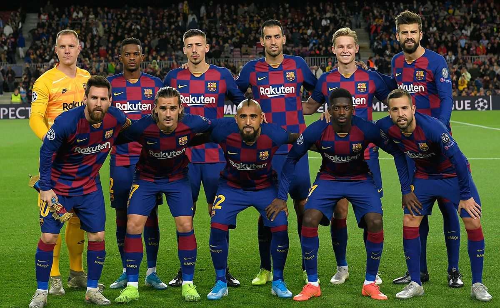

FC Barcelona sin nettside: Fcbarcelona.com
Statistikk 2019 Kamper
| Spilt | Vunnet | Tapt | Uavgjort | |
|---|---|---|---|---|
| Hjemme | 7 | 7 | 0 | 0 |
| Borte | 8 | 4 | 1 | 3 |
Historie
Futbol Club Barcelona, som regel omtalt som Barcelona eller bare Barça, er en spansk (katalansk) idrettsklubb.
Den er basert i byen Barcelona, og er mest kjent for sitt fotballag, med herrelaget som spiller hjemmekampene sine på Camp Nou – Europas største fotballstadion
I tillegg til å være blant Europas største fotballklubber, er FC Barcelona også den største idrettsklubben i verden, med over 160 000 medlemmer
FC Barcelona er eneste klubb som har deltatt i europacuper uavbrutt siden begynnelsen i 1955, og en av tre klubber som aldri har rykket ned fra La Liga (sammen med Athletic Bilbao og Real Madrid).
Klubben har 26 spanske seriemesterskap, 30 seiere i den spanske cupen, 13 seiere i spansk supercup, fem seiere i UEFA Champions League (Mesterligaen), fem seiere i UEFA Super Cup, fire seiere i cupvinnercupen og tre seiere i VM for klubblag
Ulikt mange andre idrettsklubber er Barcelona eid og styrt av supporterne. Klubbens slagord er Més que un club («Mer enn en klubb»), noe som henviser til klubben som et symbol for katalansk kultur og katalanisme.
Oppgjørene mellom Barcelona og erkerivalen Real Madrid er et av verdens mest sette idrettsarrangementer, og refereres til som El Clásico av fans og media.
Barcelona er kjent for sin ballbesittende fotball og teknisk krevende spillestil, karakterisert av kortpasninger og bevegelse mellom lagdeler mens man leter etter åpninger i motstanderlagets forsvar, denne spillestilen blir vanligvis kalla tikitaka.